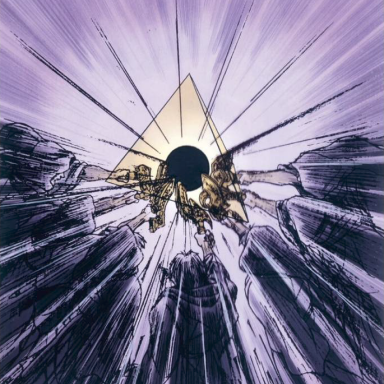
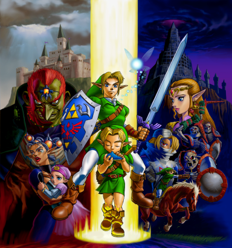
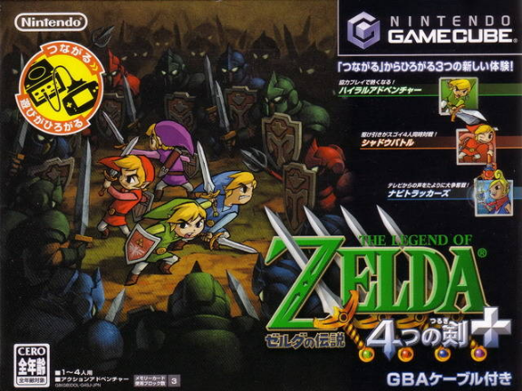

Why the Chronology of The Legend of Zelda Keeps Me Up At Night
The Legend of Zelda timeline has always bothered me. Well, not always– it made perfect sense to me as I played the games when they were released, until 2011, when perhaps in response to endless arguments from fans, Nintendo published an official timeline that linked the games together. Since this was straight from the source– the definition of canon– it’s now a settled topic, and there is no longer any room for debate. Right?
Consider this my Ninety-five Theses against the Church of Nintendo.1
I know, I know– it’s a fictional timeline for a corporate-owned video game series. I shouldn’t be worked up about it. But it’s also my favorite media franchise, and its world and narratives have lived in my imagination longer than any other creative piece: when you’re 7 years old, the characters that first spark you to start writing your own stories prove to be indelible. I’m not bothered by the Zelda timeline because it upsets my pre-conceived notion of how the games align. I’m irked because it rebukes the very logic and cohesion that made it so memorable in the first place, which does dim the magic, if ever so slightly. Beauty may not be immortal in art after all, however much da Vinci would disagree.2
The first game in the eponymous series, The Legend of Zelda, was released in 1986 in Japan, with its English localization arriving in North America in 1987. The game’s principal creator, Shigeru Miyamoto, who also launched many other now-legendary Nintendo franchises such as Mario and Donkey Kong, was inspired by exploring nature around his childhood area of Kyoto. At the time, The Legend of Zelda provided an unparalleled adventuring experience, where players could navigate an expansive world with a novel freedom unlike in any game before it. The gameplay holds up well today, and its influence on video games as a whole cannot be overstated. More than anything else, Zelda to me represents exploration, and perhaps for this reason alone, the story of the original game is quite simple.

Promotional artwork for the first game. Technology may have changed over the decades, but our sense of awe has not.
The player begins the game as the protagonist Link (not Zelda) thrust in media res, or rather, in media nil. The game’s setting, The Kingdom of Hyrule, has recently been decimated by the evil villain Ganon, and its inhabitants are reduced to living in caves to avoid the now ever-present dangers. Ganon was able to rise to power by obtaining a golden triangle known as, well, the Triforce of Power. Not content with just this, Ganon next desires the Triforce of Wisdom, and presumably not so he can better exercise great responsibility alongside great power. Princess Zelda (the one in the title!), bearing the Triforce of Wisdom, decides to split it into eight pieces and scatter it throughout the land so that Ganon may never obtain it. Prior to her capture by Ganon, Zelda tasks her royal caretaker Impa with finding a hero who can re-assemble the Triforce of Wisdom, defeat Ganon with his Triforce of Power, and save Hyrule. After a chance encounter where Link rescues Impa from Ganon’s minions, she implores him to arise as the kingdom’s only hope.
By the standards of high fantasy, it’s not a particularly complex plot. I don’t consider it a spoiler to summarize what happens next in a story released nearly 40 years ago: Link gathers all the components of the Triforce of Wisdom, defeats Ganon, saves Zelda, and returns peace to Hyrule.
All of this continues in the next game in the series, Zelda II: The Adventure of Link (the only title that’s numerical, lacks the words “The Legend of”, or mentions Link). As a direct sequel to the first, it’s set several years later, and centers around Link’s quest for the not-yet-previously mentioned Triforce of Courage. Up until now, the term “Triforce” had originally referred to the triangular shape of the objects, but from now on in the series, “Triforce” means the combined three pieces of Power, Wisdom, and Courage. This precisely leads us to the third game, The Legend of Zelda: A Link to the Past (known as Triforce of the Gods in Japan, which sounds more ominous and makes this connection to the Triforce more explicit), which illustrates a prequel to the original game. A cunning thief named Ganondorf serendipitously obtained the full Triforce, transformed into the evil demon king Ganon, and threatened Hyrule with all his horrific might. In an event known as the Imprisoning War, Hyrule’s Royal Knights waged battle against Ganon, and ultimately a group of mystical sages sealed him away in another realm. This worked well for quite some time, but then Hyrule requires Link’s courage to prevent Ganon from breaking out.

Official artwork in the instruction booklet for A Link to the Past of the sages using the Triforce to seal Ganon away. Sometimes the Imprisoning War is referred to as the Seal War.
Forgive me, die-hard fans, for skipping over the fourth entry, The Legend of Zelda: Link’s Awakening, an excellent game and one of my favorites, but one that presents more of a side-story that distracts from the main issue I want to highlight.
That brings us to the fifth one. The big one. The Legend of Zelda: Ocarina of Time. I won’t comment on this game’s significance to video game innovations, as that has been well-told many times already, but I will harp on what this game means for the Zelda timeline, why I have a problem with what Nintendo did with it, and why I support an alternative fan framework.3
Interviews with the game’s developers around the time of its release stated that Ocarina of Time was meant to portray the Imprisoning War, the event that led to Ganon being sealed from Hyrule prior to the start of A Link to the Past.4 Although the specifics differ a bit from as described in A Link to the Past– as all legends do when passed down through time– Ocarina of Time does depict Ganondorf obtaining the Triforce and sages sealing Ganon away. If the series had ended for good right here, we’d have a nice, neat chronology (omitting Link’s Awakening):
- Ocarina of Time
- A tale of the Imprisoning War, which seals Ganon away
- A Link to the Past
- Link thwarts Ganon attempting to break from his seal
- The Legend of Zelda
- After many years, the Triforce has been split within Hyrule’s Royal Family, and a revived Ganon seeks the Triforce of Wisdom after obtaining the Triforce of Power
- Zelda II: The Adventure of Link
- Link embarks on a quest to find the Triforce of Courage
At the risk of alienating readers unfamiliar with the series, but who have stuck with this article so far, I want to briefly outline the so-called “timeline split” that has generated infamous discourse in the Zelda fan community. Ocarina of Time introduced a time-travel mechanic between Link’s childhood and adulthood where the game technically has two different endings depending on Link’s age. In one scenario, after Link defeats Ganon as an adult, life carries on, and Hyrule’s future unfolds as everything in Ocarina of Time concludes. In the other scenario, still after Link defeats Ganon as an adult— and therefore Ganon is vanquished for good, no matter what– Princess Zelda sends Link back to his childhood so that he can experience the younger years he missed out on, without concern for Ganon re-appearing. These two timelines are known as the “Adult Timeline” and “Child Timeline,” respectively.

Promotional artwork for Ocarina of Time, which for the first time in the series, presents in cinematic fashion a grand conflict between Ganondorf (upper left), Link in two distinct life stages (middle), and Princess Zelda (upper right). Looks like a movie poster, doesn’t it?
The next games relevant for the plot point I’m focusing on, The Legend of Zelda: The Wind Waker and The Legend of Zelda: Twilight Princess, are each placed in one of these timelines. The Wind Waker follows Hyrule in the Adult Timeline after Ocarina of Time ends, and Twilight Princess explores what happens after Link returns to his childhood in a Ganon-free Hyrule. In each of these games, Ganondorf awakens again, but is summarily defeated.
Do you notice a problem with this?
After Ocarina of Time, in either the Child or Adult timelines, Ganondorf is no more. Furthermore, Nintendo has since deemed Ocarina of Time a standalone story separate from the Imprisoning War. So how is Ganondorf supposed to break from his initial seal and set forth the events seen in A Link to the Past?
The answer is, he can’t. Intentionally or not, by cementing Ganondorf’s eventual downfall in both The Wind Waker and Twilight Princess, the developers wrote the backstory to A Link to the Past out of existence. While Ocarina of Time was supposed to be a prequel to A Link to the Past, its subsequent sequels ended up erasing it!
Nintendo has admitted, clearly and on multiple occasions, that the story of Zelda is an afterthought and that gameplay always comes first. This does make sense, I guess, because they are video games, after all, not screenplays or novels. Remember how I mentioned earlier that, more than anything, Zelda to me is about exploration? I’ve come to realize that exploration for exploration’s sake is not actually what makes it special. Exploration is about meaning, about discovering something significant, about the thrill of learning that this pathway actually connects to this other pathway, that there are these hidden treasures over here, though watch out for the monsters guarding them, or that there are these fantastic animals over there, yet you have to journey through a really dark cave to get to the other side. Exploration is about testing your boundaries and reaching the limits of what you know, and also what you’re willing to know. There’s no right way to explore, but there is a wrong way, and exploration without preparation is just recklessness. What Nintendo did with their official timeline is reckless, and it really does harm the meaning that fans had created with the experiences of their games, of exploring this world and all its intricacies.
Especially because, in my opinion, their solution was never necessary in the first place.
First, the canonical decree. In Nintendo’s timeline, they claim that Ocarina of Time produces not two splits, but three. In the third branch, which does not have an official name but is commonly referred to as the “Fallen Hero Timeline” or the “Downfall Timeline,” Link is defeated at the hands of Ganondorf, who then unites the Triforce in full and is still consequently sealed by the assembled sages. At first brush, this seems like a clever trick to explain how Ganondorf can possess the Triforce prior to A Link to the Past and also get sealed away. Unfortunately, given the specifics of what occurs in Ocarina of Time, this creates many inconsistencies, and I won’t go into them here. The bigger problem is that by creating the timeline split in this way– at the defeat of the hero in only this instance for this one game (let alone that this outcome is not actually ever portrayed, barring a Game Over screen)– it’s painfully obvious that this hand-waving is an after-the-fact move done by Nintendo without regard to consistency across the series. Link’s defeat in any other game, of course, does not create a parallel timeline split. To quote the US Supreme Court’s opinion in Bush v. Gore (yikes), Nintendo may have as well said that this ruling is limited to the present circumstances.5
I get it. Nintendo found themselves backed into a corner, faced with the difficult task of reconciling older games, written with an internally consistent framework, with a re-designed, more complex direction for the series. I would have felt better if they just declared a reboot, though, an acknowledgment of the vagaries inherent in any creative process. Instead, we got a borderline arrogant insistence that this was planned all along– when it clearly wasn’t.
Why? Let me describe, again briefly, an oft-forgotten title released in between The Wind Waker and Twilight Princess– The Legend of Zelda: Four Swords Adventures. Possibly the lowest selling game in the series, this multiplayer-focused entry may, in fact, be the missing link for all of these disparate threads. Without going in-depth about it, there is credible evidence to suppose that during development, this was meant to tell the story of the Imprisoning War, or at least some part of it.6 There are elements of sages, seals, Royal Knights, and dark realms, all things that mesh perfectly with the eras of both Ocarina of Time and A Link to the Past; Ganon even acquires a trident, which he also wields prominently in A Link to the Past. Much of this deep story, though, was cut for the game’s final release, so the analysis I’m laying out is merely hypothetical. Since Ganondorf is extinguished at the finale of the Twilight Princess, and Four Swords Adventures includes a surprise resurrection of Ganondorf, we can readily place Twilight Princess prior to Four Swords Adventures. And then, suddenly, it flows (other games still omitted):
Initial Narrative
- Ocarina of Time
- An independent tale, concluding with sealing Ganon away
Child Timeline
- Twilight Princess
- Link defeats Ganon who has escaped from the seal
- Four Swords Adventures
- Link uses the Four Sword to seal away the resurrected Ganon, in either a re-imagining or direct depiction of the Imprisoning War
- A Link to the Past
- Link thwarts Ganon attempting to break from his seal
- The Legend of Zelda
- After many years, the Triforce has been split within Hyrule’s Royal Family, and a revived Ganon seeks the Triforce of Wisdom after obtaining the Triforce of Power
- Zelda II: The Adventure of Link
- Link embarks on a quest to find the Triforce of Courage
Adult Timeline
- The Wind Waker
- Many years after the defeat of Ganon, his darkness returns once again and the goddesses decide to flood Hyrule, generating the Great Sea
It’s almost too neat, isn’t it? The problem with this proposal, from Nintendo’s perspective, is that A Link to the Past is separated from Ocarina of Tme by two intermediary games. They have emphasized that Ocarina of Time should immediately precede A Link to the Past, and so rather than illuminate a potential scenario where Four Swords Adventures bridges the plot gap, they chose to create the third timeline. It’s imperfect, sure, but so would anything else. I just think that my explanation here is simpler and more supported by the games themselves– while also giving more credence to an entry (Four Swords Adventures) that has an otherwise awkward placement in the official timeline.

Japanese box art for Four Swords Adventures. It almost looks like… a big war.
I recognize that this essay doesn’t accomplish much. Nintendo will never read it, nor will they ever alter the timeline. I don’t think they should, either. A new direction and a new fandom has emerged, excited about this official telling. That’s fine with me,7 and I do like that there are three branches each corresponding to a piece of the Triforce. For some reason, though, writing this out gives me the closure that I need to square the circle of my favorite set of stories, to forge my own path in contrast with a narrative otherwise dictated from the top-down, as a way to mark my own exploration against the backdrop of a world that increasingly seems to resist open-ended personalization. This might not be the Zelda timeline, but it’s mine, and I think that’s the key.
Your readership is more than enough. Still, if you’d like to buy me a coffee, it’s the clearest signal to keep writing.
Footnotes
Thanks for the idea, Martin Luther.↩︎
“Beauty perishes in life, but is immortal in art.”↩︎
I liked the “Triforce Wish Theory” for awhile, but changed my mind after coming across the reference in (6).↩︎
“The story in Ocarina of Time isn’t actually original, it deals with the Sages’ Imprisoning War from the Super Famicom’s ALttP.” English Translation from the original Japanese.↩︎
“Our consideration is limited to the present circumstances, for the problem of equal protection in election processes generally presents many complexities.” In other words, not setting a legal precedent.↩︎
https://www.zeldadungeon.net/the_untold_story_of_four_swords_adventures/↩︎
Except how Tears of the Kingdom names a completely unrelated battle also “the” Imprisoning War, and introduces a new and totally different Ganondorf. That really bothers me.↩︎